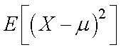
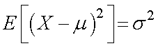
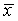
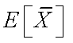
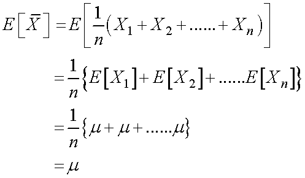
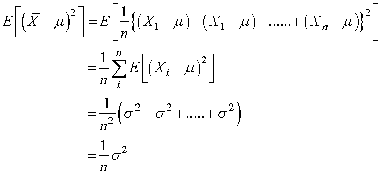

その前に，もう一つの定義，期待値，の定義をしましょう．
期待値，とは，wikiでは，
実現値と確率の積の総和
とありますが．．．簡単に言うと（参考資料の表現をお借りすると），
データサイズn が無限大にまで大きくなったときに，そこから得られ る平均
と言うことです．つまり，理想的な系での平均値，となりますね．
これを，
E(X)
と記しましょう（変量をXとしました）．
母集団から無作為に抽出した標本を解析するのであれば，”無限大の大きさの標本”とは，母集団を表しますね．
つまり，
E(X) = μ
となるのです．
次に，変量Xと母平均μとのずれを考えていきましょう．
ずれの二乗の期待値は，

となりますが，これは，
標本のサイズが無限大 ＝ 母集団
を意味しますので，
母分散σ2を意味することとなります，従って，

となります．
また，平均についての期待値を考えていきましょう．

これも，
標本のサイズが無限大 ＝ 母集団
を意味しますので，
母平均μを意味することとなります，従って，

となります．
また，平均値の散らばりは，

となります．